【完整版】微调：从原理到实操，该说的我都说了……¶
来源：哔哩哔哩 BV13QFxzCEXb，第 1 集 · 全片 00:00–01:35:26。本文为按原顺序清理的完整讲稿，保留讲述者口吻；识别结果经上下文和画面校正，原始 ASR 随附。截图为原片 640×360 原帧，小字号配置请结合正文与视频查看。
微调原理：新手需要理解的六个问题¶
模型的本质是什么¶
如果一个新手想学习微调，他最少要掌握哪些理论知识？想来想去，我总结了六个问题。
第一个，模型的本质是什么？一句话：模型的本质是函数，核心是参数，训练是为了获得更好用的参数。大模型看似智能，但其实每吐出一个词，都是根据当前的词计算下一个词的概率，这个计算过程由函数完成。函数里的参数至关重要，它们决定模型最后算出来的结果准不准确。可以理解为，模型的知识和能力存储在这些参数里。模型智能不智能，很重要的一点就是参数好不好，当然也跟模型结构有关。因此，所谓模型训练，就是寻找优质参数的过程。
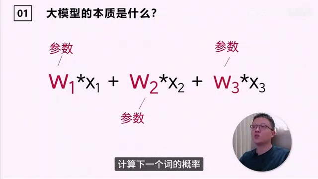
大模型参数示意 · 原片 00:24
如何得到优质参数¶
我们小时候解方程，知道解未知数有公式。你可能以为大模型的参数也能通过某个公式计算，其实不是，大模型的参数是一步一步试出来的。
首先，随机初始化所有参数的值。我们不知道好的参数是多少，没关系，先随机初始化。接下来拿这些参数开展计算，也就是输入训练数据，让模型预测下一个词的概率。模型输出一个结果，比如下一个词是“命运”，但模型认为“命运”的概率只有 0.0001，这就错得离谱。没关系，我们记录这个错误，这叫损失。
接下来，拿着这个损失，对模型的所有参数求导。求导过程很复杂，不用管它，你只要记住求导的结果称为梯度。有了梯度，结合公式，就能更新参数。看不懂公式也没关系，你只要知道更新参数的逻辑：用旧参数加减某个值，得到新参数。画面里的公式是：新参数 = 旧参数 − 学习率 × 梯度。持续重复这个过程，就能不断调整参数的值。
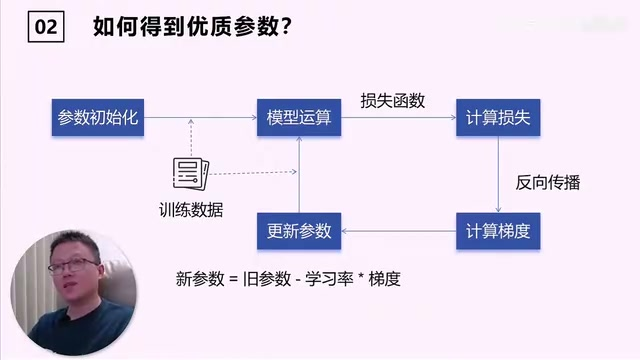
参数更新与训练循环 · 原片 02:12
怎么知道模型学得好不好¶
要重复几次才停？当我们觉得模型学会了，就可以停下来。所以，要知道多轮训练过程中，模型学得怎么样。最简单的方式就是监测前面说的损失。如果损失没有下降，说明没有学会，需要继续学，直到损失下降。
但注意，有个陷阱：损失下降，不一定说明学会了。就好比平时练习题都做对了，不代表真的学会了，你得通过考试。大模型也要考试。我们另外准备一份不能与训练数据重复的数据，称为验证集，把它丢给模型，看损失值怎么变化。如果训练集损失很低，验证集损失很高，这叫过拟合，说明学得不好。理想的情况是训练集和验证集的曲线都稳步下降。
当然，评估指标不只有损失，还有很多，后面会继续介绍。总而言之，在微调过程中，需要通过某种评估方法实时检验模型成效，这非常重要，后面会反复提。
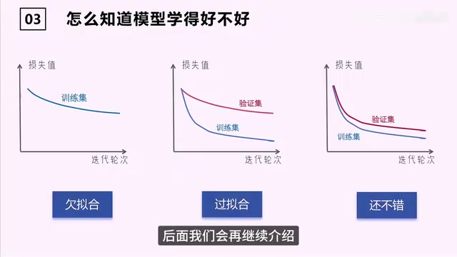
训练集与验证集损失的三种状态 · 原片 03:12
到底什么是微调¶
微调，就是在已经训练好的模型上继续调整参数。好好的，为什么还要继续调整？因为原来的模型由于各种原因不能适配我们的任务，需要训练一个新模型。
这时有两种方法：一种按照前面的流程重新训练；另一种拿已经训练好的模型，在此基础上继续训练，这就是微调。两者本质的差异是什么？参数初始化方式不同。前者随机初始化，这是没办法的办法；后者拿已经验证过的参数初始化。一个是随机的，一个是调出来的。后者相当于站在巨人肩膀上继续往下走。如果目的地是罗马，微调相当于直接把你送到意大利，极大节省时间。
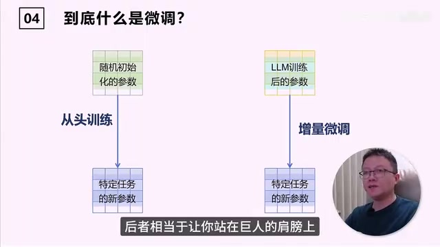
从头训练与增量微调 · 原片 04:12
微调的流程和方法¶
微调有三个步骤：找一个模型、准备一批数据、选一个微调方法。既然在已有模型基础上继续调整参数，总要找一个模型，这叫基座模型。准备数据是整个微调过程中最重要的环节，花再多心思也不过分。业界有句话：输入的是垃圾，得到的也是垃圾。有了基座模型和微调数据，最后再选一个方法。
总体有三种方法：全量微调、冻结微调、LoRA 微调。全量微调是调整所有参数，如果模型有 100 亿参数，就对 100 亿参数都进行调整。冻结微调是：神经网络有这么多层，底层不动，冻结起来，只把输出层或靠近输出层的几层拿出来调整。神奇吧，这样也可以。
我们主要介绍 LoRA 微调。它不是直接调整原来的模型参数，而是构造一个参数模块，训练这个模块的参数，然后把原模型与这个参数模块合并，得到完整参数。这样，只调整少量参数，就能实现比较好的效果。具体技术细节，后面会介绍清楚。
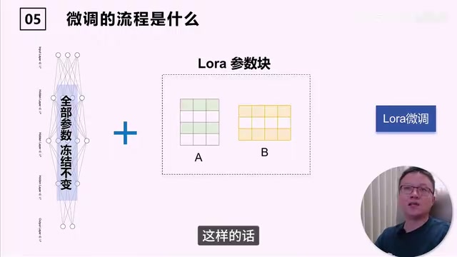
冻结原参数并增加 LoRA 参数块 · 原片 05:36
什么情况下需要微调¶
为什么要微调？各种说法很多，我觉得总结起来有两点：提示词不够用，或者计算机资源不够用。
提示词不够用，就是在你的场景里竭尽所能调整提示词，依然不能达到预期目标。这种情况太多了。比如常见的智能体工具调用，要从用户提问中准确判断使用哪个工具、对应参数是什么。纯依靠提示词，一定需要性能好的模型，普通模型不行。即便如此，还要求场景不能太复杂，否则还是不行，这时可以考虑微调。
另一种情况是提示词够用，但要写得很长，加很多案例，并使用比较大的模型，才能实现这个场景。长上下文加大模型，势必导致两个问题：资源消耗巨大、推理速度变慢。很多业务场景不能接受这两点。所以，可以专门针对场景微调一个小模型，既满足业务需求，又极大降低资源需求。
微调的适用场景 · 原片 06:48
以上六点，就是我认为新手学习大模型微调，需要掌握的最少理论知识。我遮掉了很多细节，希望通过六个问题让你对模型运作机制有框架性的了解、模糊的认知。后续具体实践中，你会不断碰撞，不断产生“哦，原来如此”的感觉，脑袋里模糊的知识地图逐渐清晰。
这是我今年最后一个系列，目标是把微调讲清楚。不敢说让你精通，说真的，有多少人敢说自己精通炼丹？但看完系列，说一句熟悉微调应该没问题，通过大部分面试，应该也问题不大。为了加快节奏，后面只能弱化剪辑，因为重点是实操。理论部分就用今天这种口播方式，不再像之前做动画，大概能节省一半以上时间。按过去经验，这是一个一定会被广泛抄袭的系列，我也顺便通过露脸增加一下抄袭成本。下一次介绍如何准备微调环境，我们的微调实践正式开始。如果觉得不错，请点一键三连，下次见。
准备微调环境¶
有多少人想学习微调，却在准备环境这一步被劝退？真可惜，因为准备环境真的很简单。大部分人被劝退是因为没有显卡，但就学习而言，根本用不了多少显卡。Qwen3 系列最小模型是 0.6B，本地运行它花不了多少显卡。即使连这点显卡都没有，网上还有很多免费 GPU 服务器可以用，当然有额度限制。免费额度用完，也可以租 GPU 服务器，一小时两三块钱，学完接下来这些课程，花不了一百块钱。显卡真的不是问题。
今天介绍三种方法：本地搭建 WSL 环境、使用免费服务器、租用服务器。
三种安装环境方式 · 原片 09:12
本地使用 WSL¶
WSL 是在 Windows 电脑上搭建 Linux 环境，再基于 Linux 安装 LLaMA Factory。WSL 是个好东西。以前在 Windows 安装 Linux，得先安装虚拟机、分配资源，再在虚拟机里安装 Linux。有两个弊端：第一，太麻烦，光安装虚拟机就劝退一堆新手；第二，要专门分配资源，原本有限的资源被强行一分为二，没办法充分利用。
WSL 简单，几个命令直接把 Linux 装在 Windows 里，再也不用专门分配资源。接下来介绍怎么启用 WSL。
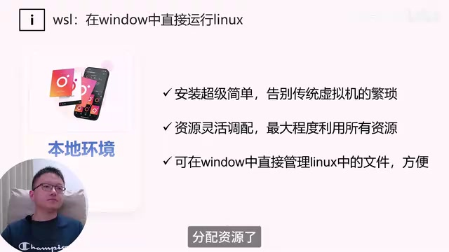
WSL 的资源与文件管理特点 · 原片 10:00
安装 WSL 总共三个步骤：启用 WSL 和虚拟机功能、安装 Ubuntu、进入 Ubuntu。
首先，以管理员身份打开 PowerShell。如果具备相应的网络访问条件，直接执行下面这条命令，就能完成第一步和第二步。很多同学不具备这个条件，我们也不要求具备，后续整个课程都会假定你没有这类网络条件。
wsl --install -d Ubuntu-20.04
也可以分步执行，先执行下面两条命令，开启 WSL 和虚拟机功能：
dism.exe /online /enable-feature /featurename:Microsoft-Windows-Subsystem-Linux /all /norestart
dism.exe /online /enable-feature /featurename:VirtualMachinePlatform /all /norestart
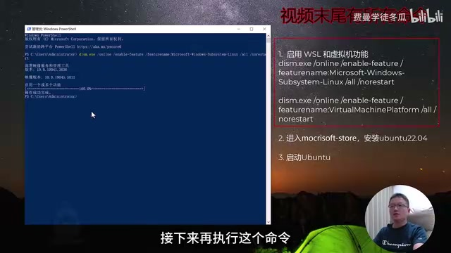
启用 WSL 与虚拟机功能 · 原片 10:48
接下来装 Ubuntu。其实推荐 22.04，但我电脑已经装了 22.04，所以演示用 20.04。打开 Microsoft Store，搜索 Ubuntu 20.04，点击、安装，等待完成。安装间隙喝口水——这么快！然后点“打开”，进入安装环节。完成后，输入 Linux 用户名，按自己的需要命名，我写的是 dg。接着提示输入密码，我示范输入 123456，再输一次。它没有显示字符，但其实已经输入了，回车，这样就完成了。
它默认会帮我们登录，但我们不在这里登录，回到 PowerShell 界面，看是否安装成功。列表中已经有 Ubuntu-20.04。接下来在这里登录，使用 wsl -d Ubuntu-20.04，就进来了。查看一下版本，没错，是 20.04。接下来就可以安装 LLaMA Factory。
额外再多讲几句：WSL 有一个快捷的设置方式。先 exit 退出，通过 wsl --set-default Ubuntu-20.04 设置默认启动项。以后只写 wsl 就能进入，不用写这么长一串。运行、查看一下，默认运行的就是它。后面仍以 22.04 演示，所以这里把默认项设回 Ubuntu-22.04。到这里，WSL 环境装完，后面介绍 LLaMA Factory。
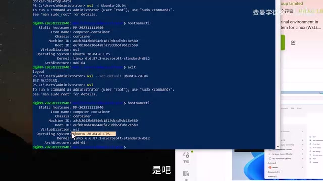
查看 Ubuntu 与设置默认版本 · 原片 13:00
魔搭免费 GPU 服务器¶
接下来介绍免费服务器。进入魔搭社区，注册一下；我已注册，就不演示，很简单。这里准备了两种 GPU 服务器：一种 24G 显存，免费使用 36 小时；另一种 16G 显存，免费使用 64 小时。两者重要区别是：16G 这台每次退出，数据都会清空，下次登录要重装环境，稍微麻烦，但毕竟免费，要什么自行车？而且安装不麻烦，可以写个 Shell 脚本，把安装过程固定下来，以后每次执行脚本即可。
魔搭 Notebook GPU 环境选择 · 原片 14:00
启动试试。我的 16G 服务器已经用了二十几个小时，一会儿登进去，里面什么也没有。点“启动”，进行验证——这个有点难，验证失败，有点尴尬，再来一次。验证通过，稍等。如果第一次登录，可能还会要求手机号和短信验证，照着输入即可。点击“查看”，成功登录，看看，没有任何数据。没关系，不影响应用。
我已提前写好脚本。新建文件、编辑，把 Shell 脚本复制进去，保存，执行脚本，它就开始安装。此时可以泡杯咖啡，过一会再来，大约五到十分钟。安装成功！一会儿再拆解安装过程，现在先看最后一种服务器使用方式：租一台。
租用 AutoDL 服务器¶
来到 AutoDL，没注册记得先注册。点击顶部“算力市场”，可以看到一堆可租用的 GPU 服务器。租用方式整体上大概有两种。一种包段，可以按日、周、月包，这段时间随时上来都有服务器，但不管用不用都要付钱。另一种按量，用多少给多少；退出后，资源可能被别人占用，要等别人退出才能用。如果急着用，只能另租一台。但这对你是全新服务器，原数据还在另一台。
学习微调选哪种？当然后者。被占用，大不了在另一台重新准备环境和数据，问题不大。当然，你是土豪当我没说，随意。我们选个 4090，一小时两块钱，还行，今天不喝奶茶，来学习。
点这里，进入租赁页面，选择镜像。镜像选哪个无所谓，反正环境要重装，认准 Ubuntu 22.04 就好，这是官方推荐版本。点击底部“创建并开机”，等待开机完成。接着点 JupyterLab，就能进入服务器。
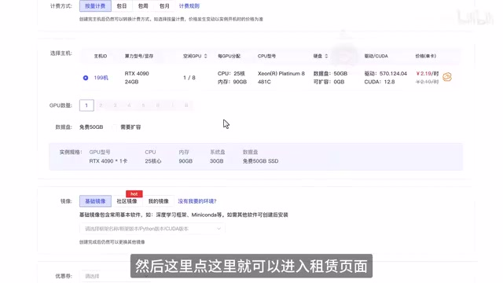
AutoDL 实例与镜像选择 · 原片 16:36
安装 LLaMA Factory 并检查环境¶
三种环境都介绍完了，接下来装 LLaMA Factory。我强烈建议把它作为学习微调的入门工具，因为零代码，可以专注微调，省去学习代码的烦恼。下面利用魔搭免费服务器演示。本地 WSL 和其他云服务器，安装方式大同小异，我试过三种环境都可以。
先执行这两个命令。这两条只有魔搭免费服务器需要，是我踩出的坑，否则会报错。你实际安装时可以先跳过试试，不一定要执行。
sudo apt-get update
sudo apt-get install -y python3-distutils
然后执行 nvidia-smi，查看是否有 GPU 驱动。一般都有。这里显示驱动版本是 470，显示的 CUDA 版本是 12.1。接着拉取 LLaMA Factory 代码，我用 Gitee，没有用 GitHub，因为 GitHub 大概率需要额外网络条件，可能拉不动。
git clone https://gitee.com/hiyouga/LLaMA-Factory.git
成功拉下来后，安装虚拟环境。强烈建议一定用虚拟环境，不要直接用服务器自带环境。各种环境交叉在一起，后面可能遇到奇奇怪怪的报错。安装虚拟环境，我建议用 uv。执行命令装 uv，我使用阿里云镜像加速，这里不要使用清华镜像。我遇过几次报错，最后都是换阿里云解决的。
pip install uv -i https://mirrors.aliyun.com/pypi/simple
uv venv finetune
source finetune/bin/activate
finetune 是虚拟环境名，可以自己命名。激活后看到命令行前的环境标志，就代表已经进入。接下来进入 LLaMA Factory 文件夹，执行安装相关包的命令。过程约五到十分钟，又可以喝杯咖啡了。
cd LLaMA-Factory
uv pip install -e ".[torch,metrics]" -i https://mirrors.aliyun.com/pypi/simple
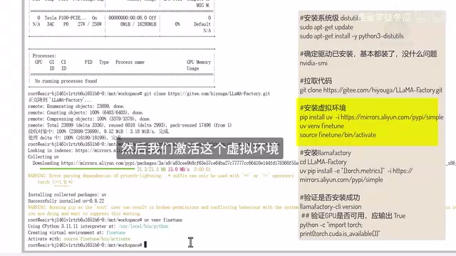
安装环境与激活虚拟环境 · 原片 19:12
完成后验证安装。执行 llamafactory-cli version，安装成功会打印 LLaMA Factory 版本，稍微等一下，成功打印出来，是 0.9.4。还可以试一下能不能识别 CUDA，如果成功，会打印出 True。可以，安装成功了，接下来就可以开展各种激烈的微调操作。
python -c "import torch; print(torch.cuda.is_available())"
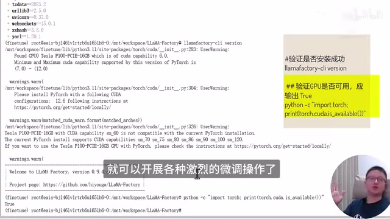
验证安装和 CUDA 可用性 · 原片 20:12
今天讲到这里，相关代码放视频末尾。下一次讲如何快速了解 LLaMA Factory 核心功能，下次见。
LLaMA Factory：WebUI 与配置文件两种使用方式¶
一行代码都不用写，就能实现模型微调，这是 LLaMA Factory 最大优点，因此我认为它最适合新手。在里面，只要通过参数配置，就能实现所有微调功能。主要有两种方式：WebUI，以及编辑配置文件。今天都介绍，最后再告诉你我推荐哪种。
这次使用本地 WSL，已提前安装 LLaMA Factory 并进入虚拟环境。如果不知道怎么装，请看上一段。
用 WebUI 加载模型和对话¶
先执行下面命令启动 WebUI。顺便提一句，如果在 AutoDL 租服务器，需要在本机额外执行连接命令，具体步骤放在画面里。如果用魔搭免费服务器，就不要用 WebUI，操作会更复杂，这里不展开。
llamafactory-cli webui
启动成功，在浏览器输入启动提示的地址，默认端口 7860。左上角把语言选中文，就清楚多了。参数非常多，我分类整理过，约两百个，但别慌，实际不需要这么多，本系列大概讲五十个左右。模型名、微调方法等常见参数，后面会频繁打交道；其他参数对应不同功能，不用那个功能就不用管。比如后面会介绍 SwanLab 监测面板，用它就要配相关参数。
这里还按功能分成模型训练、模型评估、推理对话、模型导出，不同功能对应不同参数。
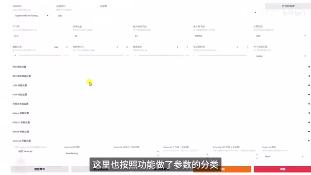
LLaMA Factory WebUI 训练参数区域 · 原片 22:24
演示推理对话。先选 Qwen3，选最小的 0.6B，模型路径自动填好。下载源选 ModelScope，LLaMA Factory 会自动下载。Hugging Face 需要相应网络条件，ModelScope 在国内，速度快些。点击 Chat，再点“加载模型”，其他参数不管。第一次运行会持续一两分钟，可以切回 WSL，看见正在下载模型的提示。我已下过，所以加载很快。
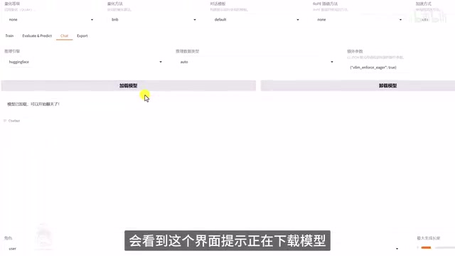
WebUI 模型加载与对话 · 原片 23:12
然后开始对话，输入“你是谁”，点提交，完成对话。以后微调好模型，也可以在这里体验。Web 界面演示到这里。
CLI 命令与整个项目流程¶
接下来介绍编辑配置文件、执行命令的方式。先执行 llamafactory-cli -h，查看有哪些命令，总共八个。api 把模型部署成接口；chat 和 webchat 都做推理对话，区别是前者在 CLI，后者在 WebUI；export 做模型合并、导出；train 是核心功能，微调主要用它；webui 刚用过；env 显示当前环境核心参数，比如核心包版本、显卡型号、显存大小等；version 查看版本，之前用过。
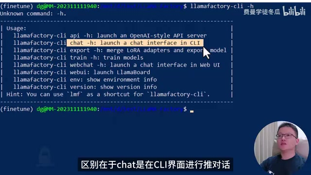
LLaMA Factory CLI 命令列表 · 原片 24:00
通常微调项目流程是：微调训练、推理验证、模型导出、模型部署。快速带大家走一遍。瓜子饮料拿出来，当吃个瓜，因为操作比较多，但全程不用记，后面还会再讲。今天只是建立框架性的了解，看不懂没关系，有个模糊认知就够了。接下来四个命令都分两步：修改配置文件、执行命令。
train：修改配置并训练¶
先修改配置。这里介绍 WSL 的好处：可以在 Windows 直接改 Linux 文件。Windows 中这个 LLaMA Factory 文件夹，其实对应 Linux 中同一个文件夹，所以可以直接修改。
进入 LLaMA Factory，再进 examples，里面存了大量各场景配置示例，简单修改就能用，真贴心，为新手考虑周到。进入 train_lora，编辑 llama3_lora_sft.yaml。这是 LoRA 微调配置，不改也能直接训练。但它使用 8B 模型，对实验太大，我们换为 0.6B，把 model_name_or_path 改为 Qwen/Qwen3-0.6B-base。基座改了，template 一定也跟着改，这里改 default。
LoRA 微调后生成模型文件，指定保存路径，方便观察，画面为 output_dir: saves/Qwen3-0.6B/lora/sft。其他不改。有人问训练数据呢？就在 dataset 里，已经给了一些示例，先直接用，后面再讲怎么准备数据。修改完按 Ctrl+S，记得一定保存。
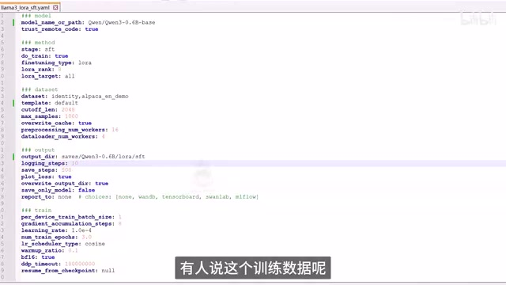
训练配置文件修改 · 原片 26:24
进入 LLaMA Factory 文件夹，执行训练：
USE_MODELSCOPE_HUB=1 llamafactory-cli train examples/train_lora/llama3_lora_sft.yaml
两个注意点：LLaMA Factory 的参数有两种写法，一种写配置文件，一种写环境变量。这里 USE_MODELSCOPE_HUB=1 表示从 ModelScope 下载，刚好写在环境变量里。第二，后面是配置文件路径，使用相对路径，一定先进入 LLaMA Factory 文件夹，否则找不到配置，还可能有其他报错。先进入，再执行。
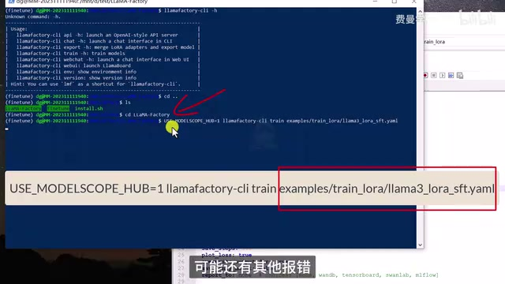
使用配置文件启动训练 · 原片 27:12
我的电脑执行大约三十分钟，有得等。不过好消息是我会时间穿梭术，直接带你到三十分钟后。训练完成，实际花了二十一分钟。来到刚才指定的保存路径，检查 saves 中的结果，这就是微调成果。接下来拿它推理。
chat：加载基座和 LoRA 参数块¶
还是先改配置。进入 examples/inference，修改其中的 llama3_lora_sft.yaml。做三个调整：基座模型路径改为刚才使用的模型；adapter_name_or_path 填 LoRA 参数块路径，就是刚才保存的结果，复制过来；template 与训练时一致，也复制过来。其他可以不动，保存。
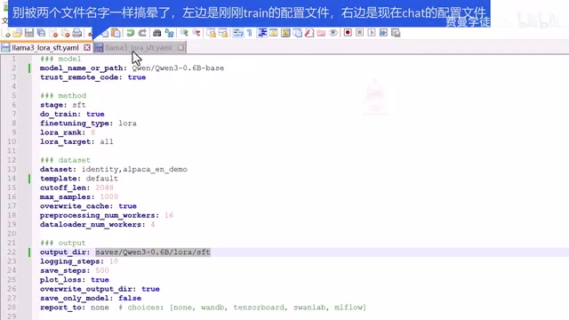
训练输出目录与同名配置文件的区分 · 原片 28:12
执行：
USE_MODELSCOPE_HUB=1 llamafactory-cli chat examples/inference/llama3_lora_sft.yaml
加载完成后在这里对话，仍提问“你是谁”。它回答了，但有点奇怪，为什么？这跟训练数据有关。刚才其中一个数据集叫 identity，到 LLaMA Factory 的 data 文件夹，案例数据都在这里，打开 identity.json。它本身就长这样：你问名字或跟它对话，它告诉你我是谁。实际应用可以把 {{name}}、{{author}} 改成自己的名字，模型就会准确回答。这里我们没改，所以它把变量直接回答出来了。退出，结束对话。
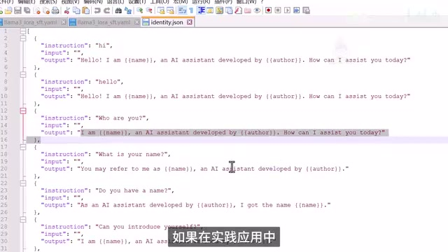
identity 数据集示例 · 原片 29:12
export：合并基座和 LoRA¶
刚才配置里要有两个参数，才是完整模型，能不能合成一个？可以。还是先改配置，进入 examples/merge_lora，找到 llama3_lora_sft.yaml。前面三个参数和刚才一样，直接 Ctrl+C 复制、Ctrl+V 粘贴。再额外修改 export_dir 路径，表示一会合并后的模型存在哪。
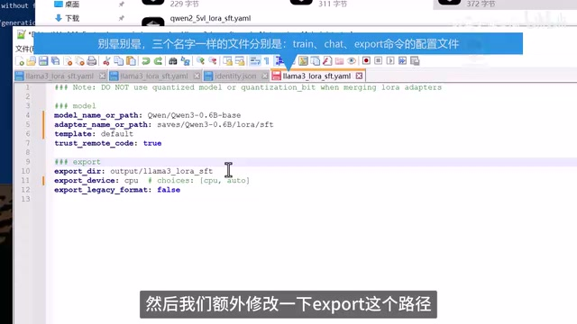
合并 LoRA 的导出配置 · 原片 30:00
我们存到 output/Qwen3-0.6B。配置改完，执行：
USE_MODELSCOPE_HUB=1 llamafactory-cli export examples/merge_lora/llama3_lora_sft.yaml
执行完，去 LLaMA Factory 下的 output 文件夹，双击进去，这里就把基座和 LoRA 合成一个模型了。合并之后能不能用？这就来到最后一个命令 api：把模型部署成接口，再试能否成功调用。
api：部署模型并调用接口¶
还是先改配置。API 配置和 chat 一样，因为本质上都做推理。来到刚才 Chat 的配置，把 model_name_or_path 改成刚导出的路径，删除 adapter_name_or_path，因为两个模型已合一，其他不动。然后执行：
USE_MODELSCOPE_HUB=1 llamafactory-cli api examples/inference/llama3_lora_sft.yaml
接口成功启用，这里显示接口地址。另外开一个命令行窗口，进入 Ubuntu，执行画面中的接口调用命令。我提问的是“你是谁”，看返回什么。返回和刚才一样，说明成功合并了模型。
所有命令介绍完，回到开头的问题，我推荐哪种方式？我推荐第二种，配置文件加命令行。WebUI 看起来方便，但密密麻麻的界面容易让我们失去焦点；配置文件能聚焦核心参数，像刚才，只看需要改的那些就行。配置文件保存起来，以后也容易复现和复用。后面所有教学都会使用配置文件。
WebUI 与命令行方式对照 · 原片 31:48
今天课程到这里，觉得吃力没关系，只要听懂两点：原来 LLaMA Factory 有这么多功能；执行功能只需简单配置参数。大致建立这些认知就够了，后面会抽丝剥茧，讲清具体细节。下一次讲挑选基座模型，觉得不错请给一键三连，感谢。
如何选择基座模型¶
模型也太多了，有什么区别，怎么选？你是不是也有选择困难症？今天聊怎么选基座，先讲理论，再实操。微调本质是在大模型基础上继续调参数，理论上任何模型都能微调。但实际任务选不同模型，效果不同。常说微调是站在巨人肩膀上继续走，基座选不好，最多只能站在巨人的腰上。
来到魔搭，海量模型，第一次看到难免一脸懵。这么多怎么选？我给四个思考角度：模型家族、模型阶段、模型大小、思考模式。
模型家族¶
点击“其他”，下面的“结构”代表不同模型家族。直接说结论，我建议 Qwen3，三个理由。首先性能强大，经过人民群众考验，被江湖人称“Qwen 神”，不是浪得虚名。第二生态友好，微调中遇到的问题，网上基本都有答案，学习方便。第三型号齐全，从大到小，从通用到专用，总有一款适合你。
模型阶段¶
模型大致两种：仅完成预训练、没做下游任务适配的，叫预训练模型；另一种在预训练基础上进一步适配下游任务，比如医疗问答、代码生成。预训练与微调模型，好比高中生和大学生：高中生完成基础知识学习，知识广但不专精；大学生进一步学专业，在具体领域更强。
怎么挑？预训练模型可塑性更强，上限更高，但通常更难，需要更多数据、更强的微调技术，适合复杂场景和经验丰富的人。微调模型可塑性差些，但已做过指令遵循、对话能力的微调，接手调教容易许多，适合快速落地、小幅优化，比如客服机器人，也适合新手。另一个知名框架 Unsloth 官方也建议从微调模型入手学习。
怎么分辨？看名字。没有后缀，或后缀是 Base 的，属于预训练模型；有后缀的，按后缀不同，可能是不同任务的微调模型。为什么说“可能”？有些后缀代表量化或其他东西，要自己甄别。如果实在分不清，就认准 Instruct 后缀。
模型大小¶
名字里的几 B 是参数量，B 是十亿，14B 就是一百四十亿。我的建议是在满足应用的前提下越小越好，小意味着快、省钱。但注意，前提是满足应用。复杂任务，模型太小可能微调不出成效，要靠自己多试。学习微调，一般任务不太复杂，可以先试 4B 或 8B。
是否使用思考模式¶
推理模型思考后效果更好，这都懂，但还是那个问题：慢、费资源。思考模式主要适合数学、代码、复杂推理。我相信看本系列的，大多不会面对这么复杂的场景，多是简单指令微调，所以能不用就不用。
提醒一下：如果要微调思考能力，一定选支持思考模式的基座，否则很麻烦。比如这里找一个不带 Thinking 标志的，跑哪去了？在这里。点进去，介绍明确说非思考模式，那就不能选它来训练思考能力。反过来，只做快思考微调，选什么都可以，因为 Qwen3 思考模式能关闭，即便选了支持思考的模型，也能关掉。
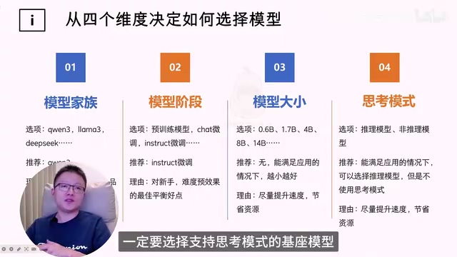
选择模型的四个维度 · 原片 37:36
下载模型到本地再使用¶
假设选定了模型，怎样下载使用？进入实操。先进入本地 Linux 环境，云服务器也没问题，相关环境已搭好；不会搭请看前面。先激活虚拟环境，路径记得换自己的，然后安装 ModelScope，这是魔搭官方包，后续基于它下载。
source finetune/bin/activate
uv pip install modelscope -i https://mirrors.aliyun.com/pypi/simple
mkdir models
装完新建文件夹方便管理，以后所有模型都放这里。去魔搭选模型，我们选小一点的 0.6B，点这里复制模型名。执行下载命令，--model 填刚复制的名字，--local_dir 填存储路径。记得再加下一级文件夹，方便把不同模型分开保存。
modelscope download --model Qwen/Qwen3-0.6B --local_dir /mnt/d/test/models/Qwen3-0.6B
执行，开始下载。速度比较快，大约三四分钟。不等了，来个时间穿梭术。下载完成，看看有没有——尴尬，有的。应用它只要把模型绝对路径写进配置。
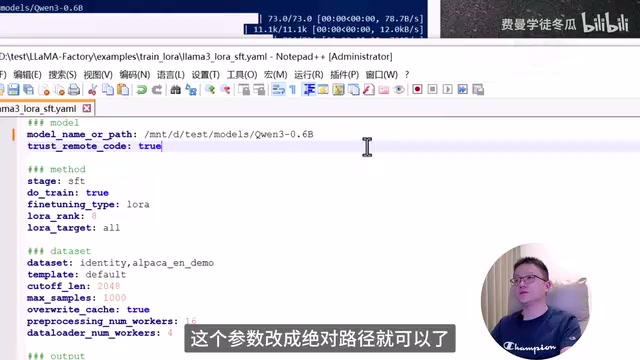
本地模型路径写入训练配置 · 原片 40:00
参考上一节，打开之前的训练配置，将 model_name_or_path 改成这个绝对路径，Ctrl+S 保存，再执行训练命令。首先，记得来到 LLaMA Factory 文件夹，再执行：
llamafactory-cli train examples/train_lora/llama3_lora_sft.yaml
发现它跟上一节有什么区别吗？上一节前面加了 ModelScope 环境变量，告诉系统到 ModelScope 对应的位置找模型。这次使用绝对路径，不需要这个参数。模型启动训练，看，用的就是刚下载的模型。训练也比较久，摸会儿鱼——不对，这次课结束了。感谢收看，记得手动尝试，下一次介绍高质量数据集怎么构建。做 UP 主之后才知道一键三连蛮重要，觉得不错给个一键三连，下次见。
微调数据：质量、数量与多样性¶
如果问我微调最重要的环节，我会告诉你：数据、数据，还是数据。机器学习界以前有句话：数据决定模型上限，算法只是让你逼近这个上限。这话现在仍不过时。但准备数据确实麻烦，通常占整个微调工作的 70%–80%，很多人因此想偷懒。模型会惩罚想偷懒的人。很多人急着做后续调试，发现没效果，最后乖乖回头把数据搞清楚，才提升了效果。
用户上线后怎么问，就怎么准备训练输入¶
怎么准备？最重要的一点：上线后用户怎么问，微调时就怎么准备数据。做客服机器人，最好收集历史用户常见提问，既包括内容，也包括提问方式。做周报优化器、上线给同事用，训练阶段最好找同事收集平时写的垃圾周报，当模型输入。再通过人工填写、规则填充、模型回答等方式得到输出，有了输入输出，训练数据就准备好了。
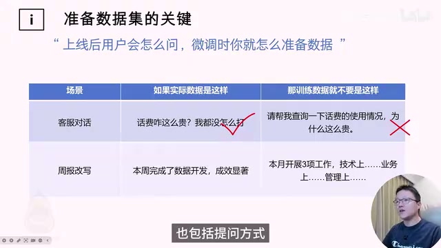
训练数据与实际用户提问对照 · 原片 42:12
训练数据要尽量模拟上线后用户的问题类型、语言风格、复杂程度，让训练数据与上线预测数据的分布尽量相似，才有更好的泛化效果。当然是“尽量”相似，实在不相似行不行？也可以，只是效果差一点，具体还得实际试。
没有历史数据、从来没积累过怎么办？先借助大模型蒸馏一批数据，微调出模型，部署上线，给有代表性的一批用户使用。过程中收集用户数据，再拿这些数据更新模型。更新模型、收集数据、再更新，不断迭代，就能不断提升效果。蒸馏数据虽然跟真实场景有区别，但效率高，可以尽快调出一个六十分的模型，满足基本要求。怎么蒸馏，后面两节课说。
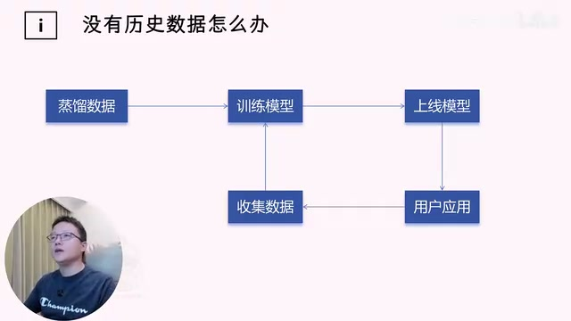
从蒸馏到用户数据的迭代循环 · 原片 43:48
三个需要注意的地方¶
第一，数据质量比数量重要。这很好理解，即便不能一条条检查，也一定要抽样评估，心里有数。
第二，数据量不要太多，也不要太少，取决于任务类型和基座。实践中可以从一千到两千条开始，根据效果逐渐增减。任务简单，比如意图识别，不用太多；任务复杂，比如知识库问题，要看知识库大小，知识库大，微调数据就多些。基座若是 Base，数据要多些，因为模型还没学会指令遵循；已调过的 Chat 模型，可以少一些。
即便数据干净，也不是越多越好：多了容易过拟合，容易造成灾难性遗忘。什么叫灾难性遗忘？比如微调前问一加一等于多少，模型知道；微调后反而不知道。为了避免，可以在数据里补充一些通用数据集。
第三，注意多样性，尽量覆盖用户提问的方方面面。微调客服问答，要覆盖不同问题，也要覆盖同一问题的不同问法。这非常重要，尤其通过大模型蒸馏时，一定千方百计保障数据多样性。有时看似生成一千条，其实大差不差，就没有意义，效果一定不好。后面会讲蒸馏时怎么保障多样性。
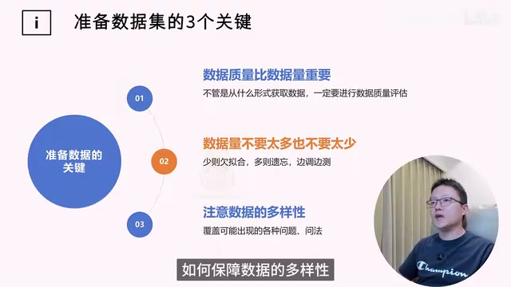
数据质量、数量与多样性 · 原片 45:36
准备数据的三种方式¶
大体三种：人工准备、模型生成加人工检查、开源数据。
人工很好理解，埋头一条条准备。有人看不起，其实别看不起。我记得谷歌团队有位大佬，建议团队时不时来个披萨时间，一边吃披萨，一边讨论怎么准备、标注数据、检查生成数据。不要有太强的技术思维，觉得某方法很 low 就嗤之以鼻。还是那句话，不管黑猫白猫，能解决问题就是好猫。当然，人工太费人力，所以通常借助模型生成。
第二种，模型生成加人工检查。已有一千个问题，就让模型回答，得到输入输出对；已有内部文档，就让模型根据文档生成问答；也可以空手套白狼，让模型无中生有地生成指定领域问答。都可以，但记得人工检查、保障质量。
第三种，开源数据。网上有很多，有私人上传的，也有企业制作的。仅仅学习，懒得准备，完全可以直接用。常见网站有魔搭、天池、百度飞桨，画面列出了地址。
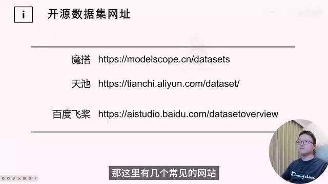
开源数据集来源 · 原片 47:00
观察别人用微调做什么¶
接下来讲下载魔搭数据。进入网站，点击“智能对话”，弹出的就是指令微调数据。看开源数据的好处是：不知道微调能做什么，就看别人生成了什么数据，大致能猜到他们用微调做什么。
比如这里“沐雪”的中文训练集，点进去看介绍，也可以点“数据预览”直接看数据。看起来是要训练一个叫沐雪的动漫人物。沐雪是谁？感觉跟年轻人脱节了，我知道的还是以前《七龙珠》《灌篮高手》。也就是说，要训练某个人物角色，就把角色对话风格喂给大模型。
再看，有法律领域的，应该是法律知识问答；有心理咨询的，这就是通过微调训练领域专家。还有弱智吧数据，拿来干嘛，训练弱智吗？不过以前听说弱智吧的数据反而更严谨，训练出来效果不错。还有用学生手册构建的数据集，这是典型的根据给定文档蒸馏问答，在企业内部知识问答也有帮助。选它演示下载。
下载学生手册数据集¶
点进数据集，复制名称，一会用。来到提前建好的虚拟环境，不会建请看前面。需要先安装 ModelScope，上一节已装过。下载命令跟下载模型差不多，--dataset 是数据集名称，填刚复制的；--local_dir 是保存路径，绝对、相对都可以。这里用相对路径，系统会在当前目录自动创建两级文件夹，把数据存进去。
modelscope download --dataset alleyf/HUST-Student-Handbook --local_dir ./dataset/HUST-Student-Handbook
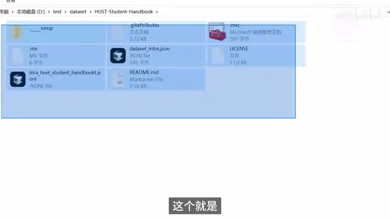
下载的学生手册数据文件 · 原片 49:48
下载好了，去 dataset/HUST-Student-Handbook 看，这就是刚成功下载的数据。打开数据，看看长什么样。应该就是拿学生手册蒸馏的，不知道是谁做的。后面也会讲怎样基于给定文档蒸馏相关数据。但在这之前，要先介绍格式。直接拿这份数据丢给 LLaMA Factory 不行，得用专门格式。具体什么格式，下次介绍。今天到这里，记得实操、一键三连，再见。
让程序先跑起来：两种数据格式¶
学习新技能最重要的是什么？我认为先把程序跑起来。所以今天先不管质量，先回答怎么准备数据，才能让微调程序跑起来。这是今天的知识点，点赞、投币、收藏，马上开始。
微调就是希望模型根据给定输入，学会输出对应数据。假设已准备输入输出对，存到文件里，怎么用？LLaMA Factory 里分两步：微调前注册数据，微调时选择数据。
注册并选择自定义数据¶
仍在本地 WSL 演示，已提前搭好环境，不会请参考前面。我还有个个人习惯推荐：LLaMA Factory 的 data 里放很多示例数据，examples 里放很多示例配置。之前把自己的文件也放这里，但感觉乱，所以通常在根目录新建 my_data、my_yaml，以后自己的数据和配置放里面。这里 my_data/gongfu.json 就是提前准备的数据。
第一步，打开 data，编辑 dataset_info.json，里面默认注册了很多文件，之前用的也在。复制一个条目新增配置，先修改名字，回头会用，再指定数据文件路径。这里就是数据存放地址，有名字、有路径，就注册完，Ctrl+S 保存。
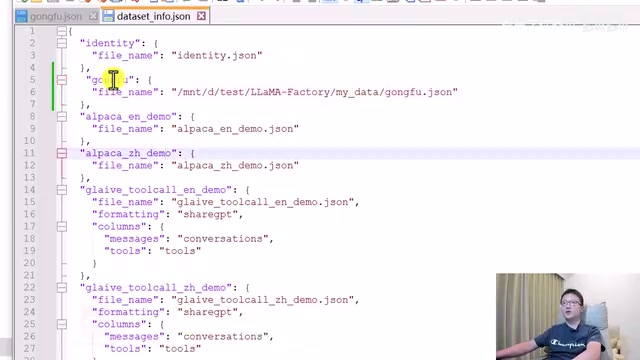
注册自定义数据集 · 原片 52:36
第二步，进 examples 找之前使用的训练配置，Ctrl+C，粘贴到 my_yaml，改名 train.yaml。打开，在 dataset 里写刚注册的名字 gongfu。机制是：根据这个名字，从数据配置文件找到对应路径，再读数据。
额外教一招：把 do_train 改成 false，LLaMA Factory 就只处理数据，不实际训练。我们只是演示格式，完全可以这样设。执行 llamafactory-cli train my_yaml/train.yaml，回车——怎么报错？前面错了吗？不是，提示格式错误。
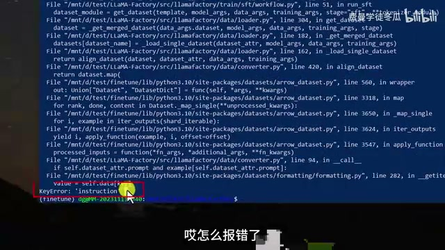
数据格式错误示例 · 原片 53:48
框架已写好后续数据处理流程，但要求你按指定格式传数据。这很好理解，不同人传不同数据，框架怎么知道怎么处理？它支持两种格式，Alpaca 和 ShareGPT。
Alpaca 格式¶
所有数据放一个列表，每个字典代表一条数据，包含 instruction、input、output 三字段。前两个相加等于实际输入，拆成两个只是方便管理。也可以把输入全放某一个字段，效果一样。画面这三种输入其实相同。
[
{"instruction": "对暗号！", "input": "一支穿云箭", "output": "万里来相见"},
{"instruction": "对暗号！一支穿云箭", "input": "", "output": "万里来相见"},
{"instruction": "", "input": "对暗号！一支穿云箭", "output": "万里来相见"}
]
注意，字段可以空，不能删，否则报错，提示缺失对应字段。按我的经验，通常建议保留指令与输入的分工，因为 instruction 能让模型明确工作方向，是触发特定能力的关键上下文。
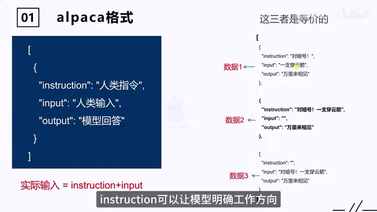
Alpaca 格式与等价输入写法 · 原片 55:00
ShareGPT 格式和格式声明¶
第二种 ShareGPT，看起来复杂一点。整个数据集是一个字典，字典中每个 conversations 是一条数据；每个 conversations 用不同字典表示不同对话环节。这里 from: human 表示输入，from: gpt 表示输出。
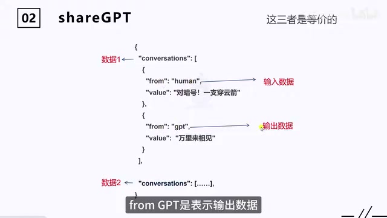
ShareGPT 对话格式 · 原片 55:24
先试 Alpaca。在刚才文件里删掉旧数据，输入这组、保存，再执行训练。正常执行，而且处理完就结束，这就是刚设 do_train: false 的作用。
再试 ShareGPT，把这种格式复制进数据文件，Ctrl+S。这里输入、这里输出，再执行——处理数据也这么慢，下次真要用云服务器，受不了。又报错，为什么？没特别声明时，框架以为给的是 Alpaca。要单独告诉它这是 ShareGPT。去 dataset_info.json 的 gongfu 条目增加 "formatting": "sharegpt"，记得逗号别丢。通过 formatting 显式声明，再执行训练，果然可以。
下载的数据格式不一致怎么办¶
网上下载的数据千奇百怪，怎么转成所需格式？一种自己编码处理，有经验不复杂。当然现在纯手工写代码越来越少，也可以让 AI 写，给它这段提示词，就能帮你完成数据处理代码。
另一种更简单：在配置里映射。假设使用这份数据，字段叫 A、B、C、D，LLaMA Factory 肯定不认识。先保存，打开数据配置，增加 columns，表示 A 对应 prompt，B 对应 query，C 对应 response。这三个 key 对应 Alpaca 的 instruction、input、output。
"columns": {
"prompt": "A",
"query": "B",
"response": "C"
}
原数据还有 D，没配置，实际就不会用到。同时，这里不能继续声明 ShareGPT，要把 formatting 删掉，或直接改成 alpaca。保存，再执行训练，看能不能成功，没问题，可以。
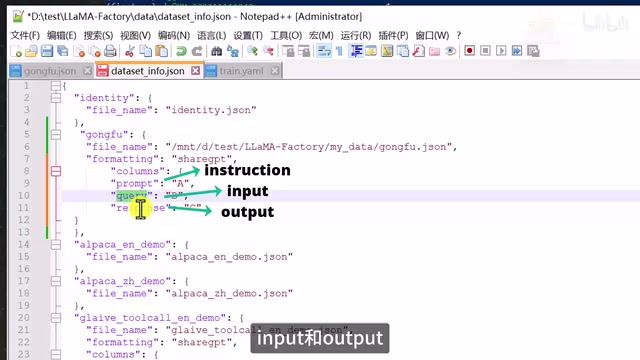
用 columns 映射自定义字段 · 原片 58:00
关于数据准备里最简单的格式部分，介绍完了。为方便讲解，这次只简单构造一条数据，实际应用当然要实打实准备。上一节讲开源数据，另外还有人工准备和蒸馏，所以下次讲蒸馏。今天到这里，记得手动实操，特别重要的还是一键三连，下次见。
从零蒸馏数据：以周报优化为例¶
假设接到任务，要微调一个优化周报的模型。第一个问题，怎么收集数据？你意识到最好找同事收集以前写得很烂的周报，再找优质大模型改成优质周报，这样就有训练数据。同事听完，用很友善的眼神看着你，说：“再说一遍，谁的周报写得烂？”收集陷入僵局，怎么办？没办法，只能让模型无中生有，硬造一堆数据。
于是准备提示词，要求产出劣质周报和优质周报。但开头就不顺：要么劣质不够劣质，要么优质不够优质，调好前者，后者又出问题，提示词调来调去总不顺。很快想到，那就拆：先集中构造劣质周报，确定没问题，再生成优质周报。改造提示词，先聚焦生成劣质周报。
用变量组合保障输入多样性¶
但新问题来了：数据质量不错，彼此太相似，会影响微调效果。马上想到可以调高 temperature，或换模型，但主要因素其实是提示词太雷同。当务之急是让提示词也有多样性，给模型不同指令。
于是你在提示词中加入几个变量，每次随机挑选一个变量值，这样就会得到不同的提示词。根据业务的实际场景，提示词里包括角色、任务类型、报告类型、问题点，还有字数。并且剔除了示例，防止模型过度参考示例，丧失灵活性，可以说是非常聪明的。按照这个方案，你很快得到了足够劣质、也足够丰富的劣质周报。
接下来，就是根据劣质周报蒸馏一份优质周报。你很快又准备好一份提示词，里面有角色定义，有要求，有示例，是一份优质提示词该有的样子。于是你又很顺利地得到了微调所需要的数据。
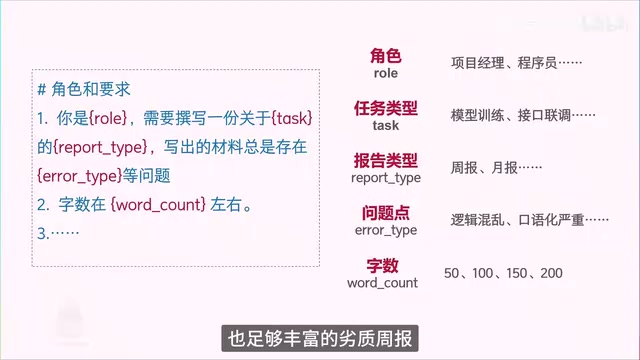
通过角色任务等变量构造多样输入 · 原片 01:01:00
总结以上过程，有以下几个要点。第一，输入数据和输出数据要分开构造，这样完成一份再检查一份，有利于提升数据质量。第二，应该尽量提升提示词的差异化，以便获得更丰富的数据。
此外还有一个建议：构造输入数据的时候，提示词中不要有示例；蒸馏输出数据的时候，提示词才要加入示例。因为输入数据要的是多样性，示例可能会让模型过度模拟，从而限制想象力。而输出数据要的是确定性，确保模型知道什么样的周报才是优质的。如果还要说一点经验教训，那就是找同事帮忙之前，先想清楚要怎么说。
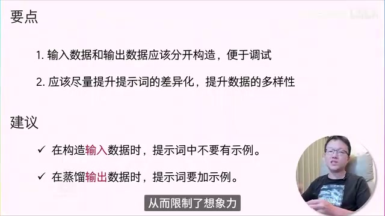
输入与输出数据分开生成的建议 · 原片 01:01:48
在 Jupyter 中构造和调用¶
正所谓纸上得来终觉浅，绝知此事要躬行。接下来进入实操环节。最适合做教学演示的，自然是 Jupyter。这个究竟怎么念，我一下子有点困惑了，不管它，就叫 Jupyter 吧。云服务器一般自带 Jupyter，可以直接使用。
这边我已经写好了代码，代码放在简介，大家可以自己下载，然后点击这里上传。我已经上传了，来，我们看一下这份代码。
代码分两部分：构造输入，即劣质报告；生成输出，即优质报告。先看第一部分的提示词模板，分三步：构造一堆变量列表；从列表随机选取部分值；把值填入模板，得到不同提示词。
根据这份模板，有多少组合？答案是 4 × 14 × 4 × 4 × 5，大约 4480 种。实际大约只需一千到两千条，4480 种方案对应两千条，丰富度够了。看生成结果，切换一下又不同，再切换又不同。接下来拿提示词调用模型，就能生成劣质报告。
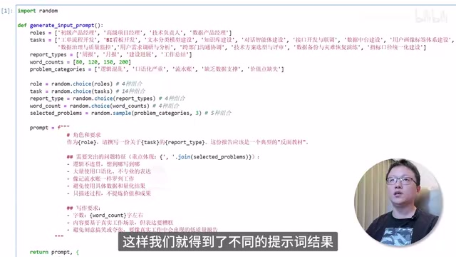
动态提示词的随机组合 · 原片 01:03:00
接下来，我们使用这个叫 OpenAI 的框架调用大模型。应该说，这是现在市面上最普遍的调用大模型框架。特点是：只要符合 OpenAI 格式的大模型接口，都可以用它调用，操作非常简单。
如果用过一些 AI 产品就知道，自定义使用模型时，只需填入模型接口地址、API Key、模型名。这是因为接口支持 OpenAI 格式，可以用同套代码。比如这里调用 GLM，就填 GLM 对应的这三个信息，其他代码不用变。API Key 需要去官网申请，到时按照这个 Key 扣费。另两个参数通常也能在官方接口文档找到。
目前主流模型都支持 OpenAI 格式。因为你不支持，别人就要重新学习、适应你的接口规范，大家可能就不用了。
我选 GLM。一般蒸馏要用能力强的大模型，但当前场景简单，基本任意模型都能满足。选它是因为前段时间送了 Token 大礼包，再不用过期，所以这个 Key 也不打码，留个有缘人，好像十一月底过期。当然 GLM 这段时间表现也不错，可圈可点。要注册不妨点简介的推荐链接，你我能各得两千万 Token。感觉有点心虚，仿佛传销，其实真不是广告，咱段位太低，接不到广告。不多说，直接调用试试。
好，成功生成。来看这个劣质周报怎么样，看了一下，足够劣质，我看着血压已经上来了。接下来就可以根据需要设定样本数量，比如一千或者两千条，再执行这段代码。这里设的是两条，之后它就会生成对应数量的劣质周报。
完成这一步，可以把数据保存起来，再进行人工检查。当然，我不会在视频里演示怎么检查，只是想再提醒你，数据质量非常重要，要抽空做抽样检查，适时调整提示词。
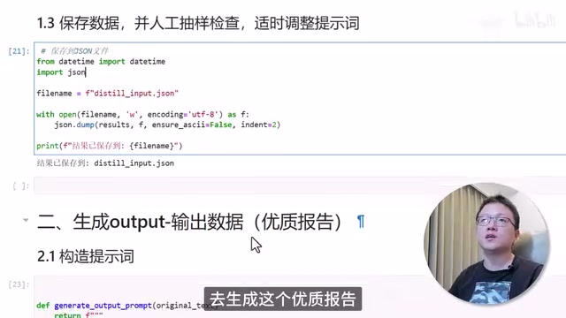
保存输入数据并检查 · 原片 01:06:12
生成优质输出与带思考的数据¶
假设保存好了，进入第二步。还是构造提示词，这份的特点是明确告诉模型优质报告的特点，确保按需要生成输出，并给一个样例。拿提示词载入劣质报告，生成优质报告。代码跟上面差不多，不赘述；唯一要说的是最后把结果按 Alpaca 存储。看最终结果，的确有模有样，虽然我看不懂，但很厉害的样子，这就是优质报告该有的评论。
任务到这里基本完成，但额外再介绍一个带思考模式的数据集。比如希望微调后的模型有思考模式，构建数据集时，也要有思考数据。这是相关代码，重点是什么？
首先，挑选模型时必须挑带思考模式的。像 GLM-4.5-X 有，但 GLM3 没有。第二，记得在参数中启动思考，把对应参数设定为 enabled。当然，这是 GLM 对应格式，不同模型可能有不同要求，你最好去看对应接口文档，比如这里就是它的接口文档。
第三，在结果里拼接思维链与最终输出，一般用 <think>、</think> 标记。看结果，这个标记里面是思考过程，结束标记后是最终输出，这才是完整带思考的数据集。画面中写法为：
output = "<think>" + message.reasoning_content + "</think>\n" + message.content
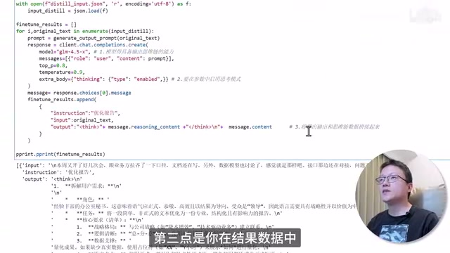
保留思考内容的数据生成写法 · 原片 01:07:36
蒸馏过程大致如此。这份代码简单，只讲逻辑，实际还要调整，比如加多线程，否则速度太慢，这些细节大家完善。
使用 Easy Dataset 从文档生成数据¶
好消息是互联网有个铁律：想做的东西，99% 情况下已经有人做。有个开源软件 Easy Dataset 就解决这个问题，上传文档，从里面解析出微调问答对。开源作者“code 秘密花园”也在 B 站，这才是真大佬，我早偷偷关注，推荐你也关注。
先下载，地址放简介，我下载 EXE，安装后双击。点“新建项目”，我已有一个，直接进入。先配置模型，点击“项目设置”里的模型配置，添加所需模型，同样填三个信息。到文件处理，上传要处理的领域文件，上传后开始切片，得到文本块。切完记得再点“批量生成 GA 对”，先不用管是什么，待会解释。
有了文本块，选中需要生成问题的块，也可全选，点击“批量生成问题”，漫长等待后，在“问题管理”看到结果。再全选，选择“构造数据集”，它会基于问题生成答案。在“数据集管理”看到最终数据，点右上“导出数据集”，选 Alpaca，确认导出，这就是蒸馏数据。
Easy Dataset 的问题列表与答案生成 · 原片 01:09:36
操作简单，更具体应用大家看原作者视频，我也不可能讲得更好，B 站搜软件名就有。但重点是：只学会软件应用，你还在第一层。要学习作者精髓，才能更上一层，因为软件有时满足不了个性化需求，还得自己上手。所以来学习一下，
接下来请看 VCR。
文档切块：尽量保留完整语义¶
给定文档，怎么得到问答对？最直观是把文档塞进提示词，让模型生成。但通常两问题：上下文有限，整个文档可能放不下；即便放得下，太长也处理不好。其次，直接生成的问题覆盖可能不全，或相似度过高。所以通常要切块，再根据文本块生成。
怎么切？这是做 RAG 老生常谈的问题。直接按字符切，很可能把同一语义片段分到不同文档，甚至形成截然不同的语义，导致错误回答。所以要尽量保留完整语义。
这个项目先把文档转成 Markdown。Markdown 用井号区分章节标题，很方便按井号切，每块一个章节，语义基本完整。但有些块太大、有些太小，可以提前设最小、最大长度。太小就合并相邻章节；太大先按换行符切成段落，段落仍大就按句号继续切，基本没问题。还出问题怎么办？按文字继续切，确保程序能执行下去。一系列操作后，得到很多文本块。
分别生成问题和答案，再扩展视角¶
根据文本块怎么生成问答？跟前面差不多，聚焦两步：分别让大模型独立生成问题与答案，方便调试；千方百计增加问题丰富度。
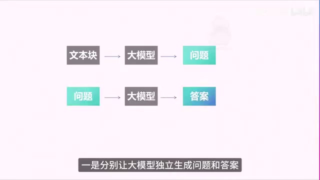
文档切块与问答生成流程 · 原片 01:11:48
第二点比较有意思，作者为每个问题设定不同文体和受众，从而极大提升问题的丰富度。文体是内容的知识表达框架，受众是内容的目标读者群体，这个就叫 GA 对。具体来说，首先让大模型根据原文生成五组 GA 对，然后将每个问题的 GA 对填进提示词，让模型参考生成。这样大模型针对同一个文本块，就能站在不同视角生成不同的问题。
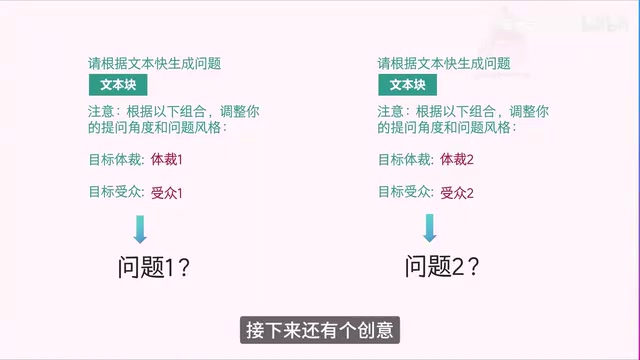
体裁与受众组合扩充问题 · 原片 01:12:24
还有个创意：对生成的问题随机剔除 60% 的问号，担心微调后模型过于依赖问号才回答。经过这些操作，每块都有多个问题。再生成答案就简单了，输入文本块和问题，让模型严格按文本块生成答案，搞定。
最后补充：体验软件会发现，作者几乎所有地方都留了人工修改入口，可以对 GA 对、文本块、问题、答案各种增删改。启示是别觉得模型蒸馏万能，人工介入仍必要，别偷懒。DeepSeek 训练 R1，冷启动阶段几千条数据、SFT 的八十万条数据，其实也有人工介入筛选。还是那句话，数据决定模型上限。今天到这里，觉得不错请给一键三连。
完整微调实操：配置、训练和调参¶
微调最困难的是什么，是跑完流程吗？不是，现在操作已傻瓜化，跑出模型不难。难的是效果不好，怎么调参。今天完整介绍全流程，重点是配参数、读 Loss 曲线、调参数。点赞投币收藏，开始。
今天的任务：把模型变小¶
早前说过，微调主要两个场景：把模型变强，学会原本不会的；把模型变小，用小模型做大模型才能做的。今天任务是后者，希望在 0.6B 上实现周报优化改写。
周报优化不难，合适提示词，大模型完全胜任。示例用相同提示词，让 0.6B 与 235B 优化同一周报。235B 效果不错，0.6B 很糟，出现幻觉，把提示词里的示例当成本次周报内容。目标就是通过微调，让 0.6B 达到 235B 一样的效果。而且 235B 需要很长提示词，0.6B 只需简单一句，效果一样甚至更好，显著省 Token。
我用 WSL，显卡 3050，打《黑神话》只能开中画质的破显卡，但训练 0.6B 足够。框架是最适合新手的 LLaMA Factory，本机已装好；你可本地，也可租云。模型 Qwen3 0.6B，提前从 ModelScope 下载，一条命令即可。数据也提前蒸馏好了，长这样：指令、输入、输出。准备后注册到数据配置，命名、写清路径，后面填名称就能用。不知道环境、模型、蒸馏怎么做，可看前面历史视频。
常用参数的五个部分¶
完成这些准备工作之后，就可以进入微调环节。LLaMA Factory 对微调的所有控制，都是通过调整配置文件参数实现。官方参数两百多个，不可能一个个看，根本学不动。重要的方式是先知道大概，后面遇到具体不懂的参数，可以直接查文档，或者问大模型。我按自己的习惯把常用参数分成五部分：最基础的参数；用于控制模型学习深度的；用于控制测试集的；用于控制显存的；以及其他功能性参数。
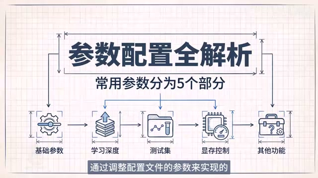
常用训练参数的五个部分 · 原片 01:15:36
model_name_or_path 指定基座，填模型名或本地路径。模型名会在第一次微调自动下载，但我通常提前从 ModelScope 下载到空间足够的硬盘，用绝对路径指定，方便管理所有基座。
template，对话模板，非常重要。训练数据经过模板，会变成带特定标志的一句话。模型在预训练阶段通过标志区分人类说什么、AI 说什么、何时开始和结束。选错模板，微调阶段与预训练模板不同，模型可能懵、胡言乱语、输出奇怪字符，或停不下来。选法简单，LLaMA Factory 官方有建议，对照选。这里 Qwen3 Base，选 default。
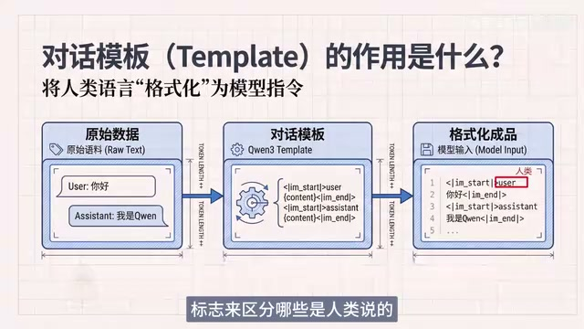
对话模板的格式化作用 · 原片 01:16:36
dataset 填训练数据名，已配置在 dataset_info.json，框架通过路径找到数据。stage 是训练阶段，有预训练、强化学习、奖励模型、有监督微调；这里有监督，选 sft。finetuning_type 是微调类型，全量、冻结、LoRA，通常选 LoRA，性价比最高，原理一会讲。
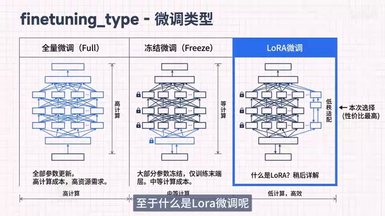
微调类型的对照 · 原片 01:17:24
do_train 填 true，表示训练。类似有 do_eval，评估并生成结果；do_predict，基于完成的微调模型批量预测。设完这些，就告诉框架基于哪个模型、用哪个数据做 LoRA；光这些已足够启动一次微调，不用“调”，设好就行。
控制学习深度与 LoRA rank¶
说调参，主要调什么？控制学习深度，不能太浅，也不能太深。浅等于没学会，深容易过拟合。常见参数是 LoRA 的秩 lora_rank、学习率、数据量、迭代轮次等。
LoRA rank 是什么？先简单理解 LoRA。假定微调后矩阵 W′，可表示为原参数 W 加变化量 ΔW。很好理解，学习目标从 W′ 变成 ΔW。ΔW 通常很大，假设三千行、五千列。有人发现 ΔW 具有低秩特性，可以拆成两个更小矩阵 A、B 的乘积。什么叫低秩先跳过，记结论：不用直接学 ΔW，只学 A、B。
矩阵相乘，B 的行必须三千，列可变；A 的列必须五千，行可变。能相乘要求左矩阵列等于右矩阵行，这个相等的数就是 LoRA rank，简称 r，是可调参数。
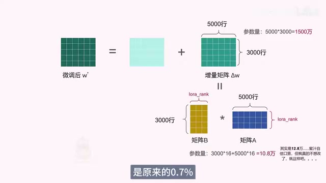
LoRA 矩阵分解与参数数量 · 原片 01:19:24
知道上述内容之后，就可以回答两个问题。第一，为什么 LoRA 会极大降低参数量？以这里为例子，拆解前参数量一千五百万。拆解之后，假设 r 是 16，参数量是十点八万，是原来的 0.7%。
第二，为什么调整 LoRA rank 可以控制模型学习深度？可以这么理解：当 r 越大，A、B 矩阵就越大，也意味着能用更大的矩阵表达 ΔW，从而让 ΔW 涵盖更丰富的信息，也就意味着模型会学得更深。当然，r 不是越大越好。r 越大参数就越多，失去用 LoRA 的初衷，而且很可能导致过拟合。通常可以设 8 或 16。LoRA 原理比较复杂，这里简化了很多知识点。如果有点懵，建议看一下我之前关于 LoRA 的讲解。
下一个参数 learning_rate，学习率。模型按公式更新：新参数 = 旧参数 − 学习率 × 梯度。学习率作用就很明显了。学习率越大，每次更新参数幅度越大，可能学得更深入，但也可能幅度过大，错过最优解，导致训练不收敛。也不能太小，太小什么都没学到，辛苦前后向传播，结果参数不怎么更新，白学。通常设在 10⁻⁵ 到 10⁻⁴ 这个范围，这是经验值，照着做就行。
学习率调度、数据量和训练轮次¶
一个好的学习率通常是这样的：开始小一点，因为此时模型参数是随机的，步伐不能太大，否则易失控；然后逐步上升到预设值，加快学习；再逐步下降，因为越后期参数越稳定，需要更精细调整。
所以学习率通常结合另两个参数。warmup_ratio: 0.1 表示前 10% 训练步中，从较低值线性增加到设定峰值；lr_scheduler_type: cosine 表示之后按余弦函数平滑衰减到接近零。这里也这么设置。
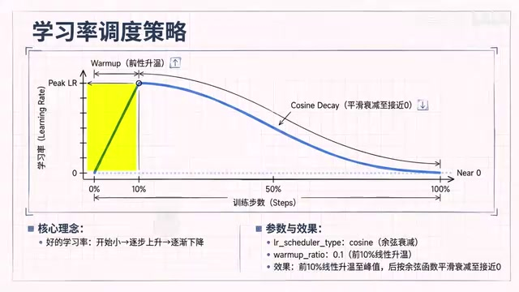
学习率调度与预热 · 原片 01:20:48
下一个 max_samples，表示从数据集抽多少数据微调。很好理解，数据越多，自然学得越深。有个技巧：设完参数，我通常先选比较小的数据量，快速跑一遍，保证参数没问题、不会出 bug，避免数据处理完成，才发现参数不当、浪费时间。
num_train_epochs 表示全部数据训练几轮。因此训练数据总量，等于单轮数据量乘训练轮次。使用的数据越多，自然学得越深入。控制学习深度主要讲这些，其他不多说。
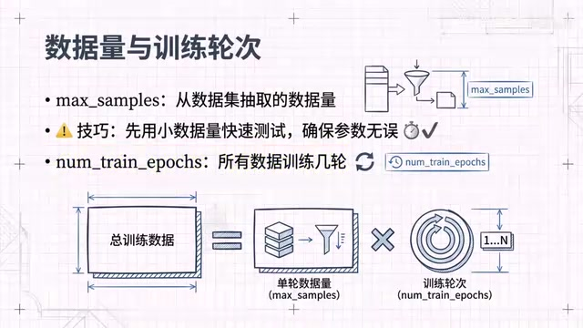
数据量与训练轮次 · 原片 01:21:48
测试集与模型保存¶
调参会选一部分数据作测试集，结合模型在训练集、测试集的表现评估微调效果。相关参数主要这些：eval_dataset 指测试数据，可以专门准备，也可不设，选训练集的一部分作测试。这时配 val_size，表示测试比例。这里 0.1，从训练数据取 10% 作测试。
per_device_eval_batch_size 表示并发测试量。推理很耗显存，考虑我这显卡比较破，设 1。
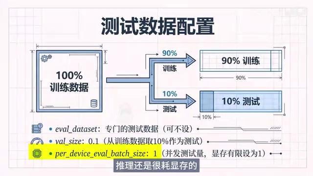
测试数据的配置 · 原片 01:22:24
另两个结合看，eval_strategy: steps、eval_steps: 50 表示每更新五十次参数，测试一次模型。通常把 save_steps 与 eval_steps 设一致，前者多久保存，后者多久评估。这样知道每个保存的模型效果如何，完成后挑最好的作最终模型。
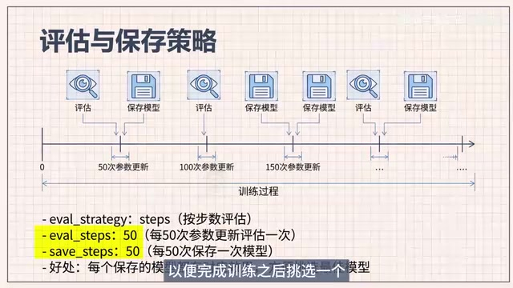
评估与保存策略 · 原片 01:22:48
还有几个简单功能参数。output_dir 指定训练后模型保存文件夹，方便管理。overwrite_output_dir 表示是否覆盖原成果，默认 false，如果输出目录已有模型，会终止训练。完成调参后可以设 false，避免好模型被覆盖；这里在调参、要反复训练，设 true。logging_steps: 10 表示每更新十次参数，打印一次当前训练集损失，监测训练成效。
显存不足与截断长度¶
接下来启动微调——报错。别急，看提示，显存不足，还需要 7G，却分配失败。很常见，不慌，LLaMA Factory 有很多控制显存的办法，只要愿意付代价，比如增加训练时间、降低训练效果，都有办法。
cutoff_len 表示数据截断长度。Attention 通常把当前 Token 与前面所有 Token 计算，显存需求平方增长，长度翻两倍，显存直接翻四倍。万一某条数据过长，就把显存撑爆，所以通常截断。
但不能随便截。微调答案通常在句子最后，参数设太短，可能恰好截掉最关键答案。所以结合训练数据一般长度合理设定，通常要求 90% 的数据在截断长度内，既保住显存，也保住训练成效。
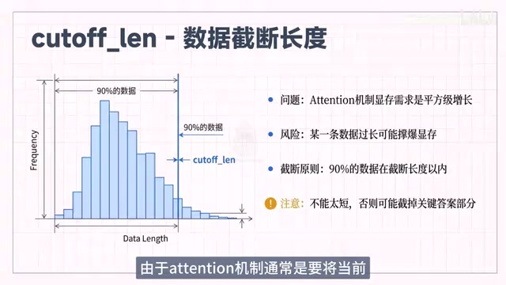
数据截断长度 · 原片 01:24:00
batch size 与梯度累积¶
接下来两个参数通常一起设，稍复杂，多费口舌。每次输入模型的数据叫一个 batch，里面的样本数叫 batch size。per_device_train_batch_size 表示每个 GPU 的 batch size。多个 GPU，总 batch size 就是它乘 GPU 数量。这里只有一个 GPU，这个参数就是总 batch size。
gradient_accumulation_steps 表示经历多少次前后向传播，才更新一次参数。比如等于 3，每三次前后向传播更新一次。若 batch size 为 2，就把 2 × 3 共六个样本得到的梯度求平均，用平均梯度更新。好处是多个梯度求平均，更稳定，训练更可控。
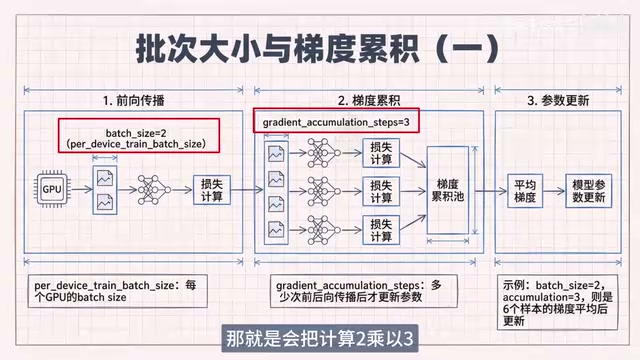
批次大小与梯度累积 · 原片 01:25:12
因此，这两组配置训练效果其实一样：一组每次一个样本、累积四次；另一组每次四个样本、累积一次。都是针对四个样本平均梯度更新。区别是前者一次只计算一个样本，显存低，但四次计算才更新，时间长；后者一次算四个，显存高，但每次计算后都更新，耗时短。
实际显存不够，通常降低单次 batch size、增加梯度累积次数，是时间换空间。显存足够，可以增大 batch size 减少训练时间。但注意，显存本来不大，增大 batch size 可能导致额外显存交换，反而更慢。
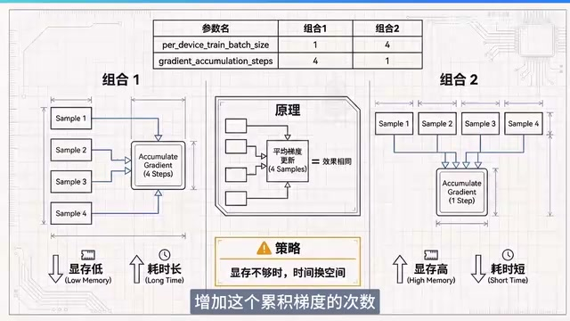
两种有效批次配置的资源差异 · 原片 01:26:00
我做了实验，在 3050、4090 上分别用两组配置跑，其他配置相同。按道理 batch size 为 4 这组应更快，在 4090 的确如此，3050 却反过来，batch size 为 4 时间更长。原因不深究，只要知道按自己的显存合理分配，不要强行设太高。即便能跑，也可能适得其反。如果显卡不足，或者时间不值钱，就无脑降 batch size 吧。
为加深印象，做道题：假设相关参数如下，整个过程共更新几次参数？自己暂停想一下。我直接公布答案，360 次，在 LLaMA Factory 训练日志也能看到结果，现在知道怎么算了吧。
画面条件是 max_samples=1000、num_train_epochs=4、batch_size=2、GPU=1、accumulation=5、val_size=0.1，计算为 4 × 1000 × 0.9 ÷ (2 × 5) = 360。
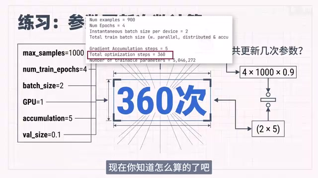
参数更新次数练习答案 · 原片 01:27:12
QLoRA：量化与反量化¶
再介绍一种省显存的方法，量化，QLoRA。启动参数 quantization_bit，取量化位数，通常 8 或 4，表示八位、四位量化。没了，就这样。开启很简单，但有必要啰嗦量化是什么、为什么省显存。
加载模型会占显存，参数通常 FP16，每个两字节。量化就是将高精度参数转成低精度整数。八位量化每参数一字节，占用降为一半；四位量化降到四分之一。所以量化后，加载所需显存大幅缩小。不考虑怎么量化，只关注前后变化。
量化节省显存 · 原片 01:27:48
但开始前后向传播，仍要把整数参数反量化为浮点数，以提高计算精度。过程逐层推进，算哪层，把哪层转成浮点数；算完马上丢掉浮点数，显存只保留压缩后的整数。加入反量化步骤，计算时间变长，所以 QLoRA 也是时间换空间的显存优化方法。
QLoRA 的反量化计算流程 · 原片 01:28:24
对量化原理有兴趣，可看我这两个量化视频。发现这次光推荐视频，没办法，操作简单，难的是背后原理。要面面俱到，又不能太啰嗦，只能这样。最后加上这些降低显存的参数，再启动微调。这次没报错，开始训练。
用 SwanLab 记录训练¶
训练完怎么评估？一般看训练集、测试集表现，最好有这样的图，直接画出两者 Loss 下降曲线，方便快速评估。
训练集与测试集损失曲线 · 原片 01:29:00
推荐好用工具 SwanLab，专门用于微调监测，能记录过程关键信息，如配置、Loss 曲线，方便历史记录与对比。使用简单，去 https://swanlab.cn/ 注册、登录，在个人设置创建 API Key，即可用。
打开 LLaMA Factory 配置。use_swanlab: true 启用；swanlab_mode: cloud 使用外网监测环境，要本地部署可用 local；swanlab_project 会在工作空间创建项目文件夹；swanlab_run_name 给某次具体微调任务命名，对应工作空间这一列；swanlab_api_key 填刚创建的 Key。
SwanLab 参数说明 · 原片 01:29:48
然后启动训练，去 SwanLab 实时观测，记录了配置项、资源使用情况、详细日志、运行环境等等。
如何读 Loss 曲线并调整参数¶
一般看训练集、测试集 Loss 变化，通过这两张图初步评估成效。怎么根据曲线判断？没有一概而论的方法，我说自己的习惯，供参考。
先看训练集 Loss 是否下降。如果没有，就别往下看，模型根本没学到东西，大概率数据有问题，要检查。如果下降，再看是否剧烈波动。剧烈波动表示不稳定，可能学习率太大、参数变更激烈，考虑降学习率；也可能梯度不稳，考虑增加累积的 batch size，让平均梯度更稳定。
接着看曲线是否趋于平稳。不平稳，说明训练不充分，最好增加训练数据或学习轮次。不过有说法是最好不超过三轮，OpenAI 担心过拟合，只训练了一轮。但我觉得还是看场景，像我训练五轮，觉得还行。
接下来重点，看测试集 Loss。先看降不降，完全不降，说明测试集与训练集根本不在一个样本空间，检查数据。如果下降，看两个 Loss 差异大不大。测试集明显大于训练集，说明训练集表现好、测试集一般，要考虑过拟合，最好增加样本多样性。按经验，测试 Loss 轻微回升，往往是过拟合警戒线。即使训练 Loss 还有下降空间，我也会暂停。
训练曲线判断与调参路径 · 原片 01:31:48
部署模型：vLLM 后端与显存参数¶
仅用 Loss 曲线还不够，这只是初步评估，需要更精准的方法，比如人工实际体验，或用模型打分。接下来部署模型，配到 Cherry Studio，与模型对话，人工体验成效。
LLaMA Factory 本身就能部署，支持 Hugging Face、vLLM、SGLang 三个推理后端。vLLM 推理速度更好，这次就用它。先执行安装 vLLM 的命令，安装后准备 API 部署配置。
前三个参数分别从训练配置抄过来：model_name_or_path、adapter_name_or_path、template。infer_backend 填 vllm。接下来两个控制显存，非常重要。vllm_maxlen 表示最长输出长度，vLLM 据此估计需预留多少显存。别设太大，否则可能直接报错；也别太小，否则影响应用。vllm_gpu_util 表示划用显存比例，vLLM 一次性划拨，过大也会报错。
还有 enable_thinking，是否开思考。这个基座可人为控制，而我们没微调它的思考能力，所以推理也关掉。画面的部署配置是：
model_name_or_path: /mnt/f/models/Base/Qwen3-0.6B-Base
adapter_name_or_path: saves/report/Qwen3-0.6B
template: default
infer_backend: vllm
vllm_maxlen: 1024
vllm_gpu_util: 0.7
enable_thinking: False
vLLM 部署配置 · 原片 01:32:36
配置完成，执行命令启动 API。API_MODEL_NAME 是模型名字，不配置，默认就是配置里的模型路径，后续使用不方便。记住名字，后面用。
API_MODEL_NAME="report-06B-0201" llamafactory-cli api my_yaml/API.yaml
服务启动，记下模型地址，一会配置。
在 Cherry Studio 中对比与人工测试¶
Cherry Studio 是方便的 AI 聊天工具，支持自定义模型，主要能同时与多个模型对话，很方便测试。下载安装后打开，点左下配置，到模型配置页。先点供应商列表“添加”，随便填名字，供应商类别记得选 OpenAI，因为刚部署的接口符合 OpenAI 规范。
点击刚创建供应商，右边 API 密钥随便填，API 地址填刚记录的模型地址。点“添加模型”，模型 ID 填启动服务时配置的名字，就行。来到对话页，可以 @ 不同模型，同时对话，全面比对，比如微调前与微调后。
通常我重点测泛化能力。训练数据都是 IT 领域，这里就举非 IT 例子，比如化身工地小工，随便写几句：“今天在工地搬了一天砖，绑了两个钢筋，还浇了三堆混凝土。”模型也能有模有样完成周报优化，还不错。这就是人工检测的方法。
部署模型的人工测试 · 原片 01:34:36
自动化评估与课程结尾¶
人工检测挺准，但毕竟太费人力，所以通常还会让大模型评估。具体来说，准备一份测试数据，用微调后模型批量推理；再让另一个更高级的模型评估推理结果质量。怎么评估？设定一套标准，让大模型按标准打分。画面给出了结构化测试集、微调模型推理、高级模型评估和评估报告的流程，以及准确性、相似性等评分维度。
自动化评估架构 · 原片 01:35:12
视频已经很长，这个方法就不介绍，留给大家自己实现。我们的微调系列也告一段落，后续可能零星再出视频，比如探讨微调到底能不能学会新知识。觉得这次不错，请给一键三连。最后祝大家春节快乐，再见。
编辑记录与阅读限制¶
正文保留原讲述的技术断言，不将其改成另一套课程。01:19 左右，原讲述和画面把 (3000+5000)×16 写为“10.8 万、约 0.7%”；按所列数字实际为 12.8 万、约 0.85%，这里保留原说法并单列此注。ShareGPT“整个数据集是一个字典”、学习率开始时“参数是随机的”、部署 vllm_maxlen 的“最长输出长度”等用语，也保留原讲述口径。
约 01:07 的非思考 GLM 版本名，ASR 为“GLM3”，具体型号仍有识别不确定性。约 21 分钟的 AutoDL 本机额外连接命令未能从 360p 画面可靠完整读出，正文只保留该操作要求。截图没有重绘或补造代码。原始 ASR、规范化时间段及审阅记录保存在 sources 中；时间审计未发现非空反向段，无因修时间而删字。
HTML 的资源、相对链接和图片哈希将以交付校验记录为准。当前会话浏览器拒绝 file 协议，未执行桌面/窄屏浏览器打开、图片缩放交互或在线时间链接点击测试，未通过其他协议或服务器绕过；此项不作为已通过的视觉交互检查。